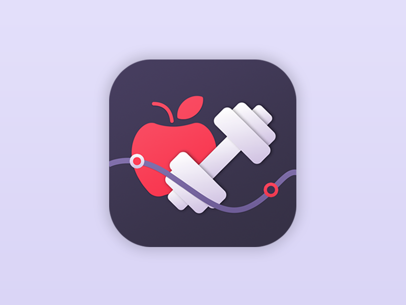

<mat-toolbar color="primary">
    <div fxHide.gt-xs>
      <button mat-icon-button (click)="toggleSidebar()">
        <mat-icon>menu</mat-icon>
      </button>
    </div>
    <div><a fxFlex fxHide.xs></a></div>
    <div fxFlex fxLayout fxLayoutAlign="flex-end" fxHide.xs>
      <ul fxLayout fxLayoutGap="10px" class="navigation-item">
        <li *ngIf="(isAuth$ | async)" (click)="logout()" style="cursor: pointer;"><a></a></li>
      </ul>
    </div>
  </mat-toolbar>